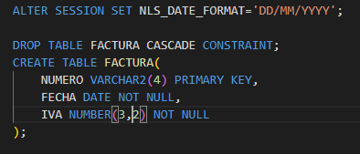
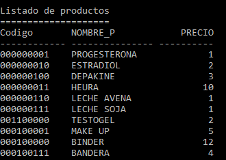
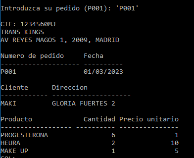
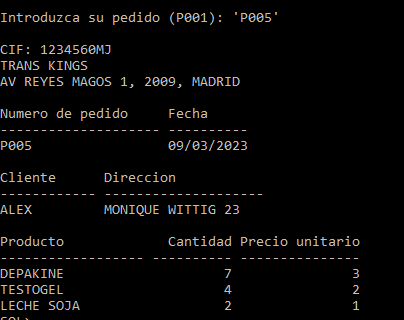
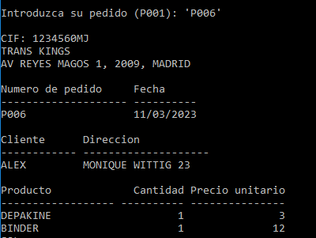
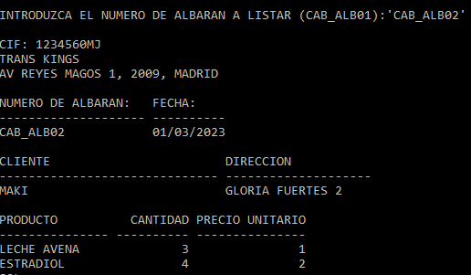
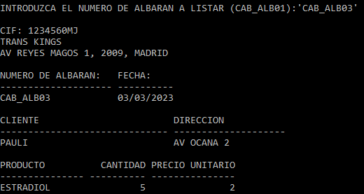
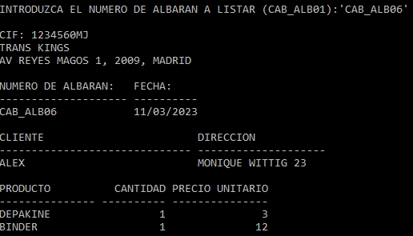
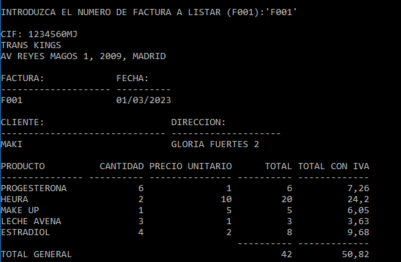

Proyecto SQL
Mi proyecto: 1. Descripción del proceso y análisis 2. Diseño de los datos 2.1 Modelo entidad relacion 2.2 Modelo relacional 3. Imágenes 3.1 Creates 3.2 Inserts 3.3 Informes Listado de productos Pedidos Albarán Factura
1. Descripción del proceso
Hemos creado una empresa ficticia llamada Trans Kings, que distribuye al por menor principalmente productos utilizados en transiciones físicas, desde hormonas hasta binders, así como algunos productos veganos a bajo coste.
A través de este proyecto se muestran todas las fases de gestión administrativa de una pequeña empresa, desde el control de su stock, gestión de la cartera de clientes, la realización de pedidos, la generación facturas, hasta el recibimiento del pago por el producto.
Añadir nuevos productos. clientes. pedidos, albaranes y facturas.
Consultar listados y documentos.
Borrar los no deseados.
Modificar productos, clientes, pedidos, albaranes y facturas.
Con la herramienta a diseñar esta empresa podrá:
Mantenimientos de productos consumibles. Consiste en la inserción de los diferentes productos consumibles fabricados en la empresa. La información más representativa que recoge el sistema es la siguiente:
código identificador del producto, nombre del producto y precio actual (por unidad). Además de realizar la inserción de estos productos el sistema debe permitir las siguientes funciones: modificación, borrado y consulta de estos productos.Entrada de pedidos. Esta función soporta la entrada de pedidos de material consumible que recibe la empresa. Estará dividida en los siguientes apartados: inserción de pedidos, borrado, modificaciones y consultas.
Generación de albaranes. Al igual que para los pedidos, el sistema almacena la información relativa a albaranes en dos archivos diferentes. Por un lado los datos de cabecera del albarán, donde almacenamos la siguiente información: número del pedido, número del albarán, fecha del albarán y fecha de facturación. Por otro lado recogemos los datos relativos a las partidas de albarán, la información es la siguiente: código del producto, cantidad de producto expedido. El sistema contempla las siguientes opciones inserción, borrado, modificación y consulta de albaranes (a partir del pedido y albarán obtendremos los datos de la cabecera del mismo y sus partidas asociadas).
Facturación. Esta función se puede dividir en tres apartados: generación de facturas, mantenimiento de facturas y consultas de facturas.
Análisis de requisitos
Según el análisis de requisitos de dicha empresa, debemos empezar por tener un listado de productos, que se identifiquen individualmente por un código de producto.
Necesitamos también tener listado de clientes, y sus respectivos pedidos, así como los albaranes de cada pedido y la posibilidad de aunar distintos pedidos de un mismo cliente en la misma factura.
El sistema de entrega de pedidos de "Trans Kings " consta de varias partes,
Tras realizar el pedido, se prepara el mismo y se crea un albarán idéntico que es firmado por le cliente confirmando la entrega, se pasa entonces a la siguiente fase la generación de facturas.
La factura recogería todos los pedidos de cada cliente, incluso aunque estos se hayan realizado en distintas fechas.
A continuación veremos el sistema de gestión y de la realización de la base de datos de mi empresa ficticia, "Trans Kings".
2. Análisis y diseño de los datos
Realizaremos antes de nada el Modelo Entidad/Relación y el Modelo Relacional para poder distinguir los tipos de relaciones entre entidades, los datos que van a almacenarse en cada Entidad y de esos datos ver cuáles son las primary key, foreign key etc.
Con esto conseguiremos crear la estructura de nuestra herramienta de administración, y de esta partiremos para crear sus correspondientes tablas en Imágenes.
2.1 Modelo entidad relacion

2.2 Modelo relacional

3. Imágenes
3.1 Creates
A continuación hemos creado las tablas en Imágenes que vamos a usar en nuestra base de datos.
tabla de factura:

tabla cliente:

tabla cabecera del pedido:

tabla cabecera de albaran:

tabla empresa:

tabla producto:

tabla línea de pedido:

tabla línea de albaran:

3.2 Inserts
Ahora procedemos a añadir datos para cada una de las tablas. En el órden que las creamos, respetando la integridad referencial, y teniendo en cuenta las constraints que hemos generado en los creates.
tabla de factura:

tabla cliente:

tabla cabecera del pedido:

tabla cabecera de albaran:

tabla empresa:

Introducimos una solo empresa por no complicar las cosas y porque es el supuesto hipótetico, pero bien podríamos haber introducido varias y asumirlas como diferentes proveedores.
tabla producto:

Para facilitar las cosas el código de producto está en binario.
tabla línea de pedido:
tabla línea de albaran:

3.3 Informes
Listado de productos
A continuación todos los productos ofrecidos por la empresa:

Script:

Pedidos
En esta consulta veremos los pedidos de cada cliente, por número de pedido:
Script:

Pedido 1:

Pedido 2:

Pedido 3:

Pedido 4:

Pedido 5:

Pedido 6:

Albarán
En esta consulta vamos a ver los albaranes de los clientes por número de albarán. Siguiendo con el ejemplo anterior, vemos dos albaranes por cliente:
Script:

Albarán 1:

Albarán 2:

Albarán 3:

Albarán 4:

Albarán 5:

Nótese que pese a ser del día 09, y el siguiente del día 11, irán en la misma factura y no supone ello problema alguno.
Albarán 6:

Factura
En esta factura podemos ver recogidos todos los pedidos por cada cliente, así como que cada factura corresponde a no más de un cliente:
Script:

Factura 1:

Factura 2:

Factura 3:

Creada por Maki Spariva Mirón Olona. Trabajo de DAW1V Volver arriba